| Digital Cover | Nama Album | Deskripsi | Tanggal Rilis |
|---|---|---|---|
| 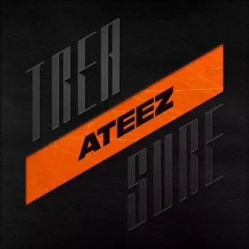 | TREASURE EP.1: ALL TO ZERO | Treasure EP.1: All to Zero adalah album mini debut dari Ateez. Album ini dirilis dengan "Pirate King" dan "Treasure" menjadi singel dari album ini. Album ini mencapai peringkat ketujuh pada Tangga Lagu Album Gaon dan terjual sebanyak 57,777 eksemplar di Korea Selatan. | 24 Oktober 2018 |

|
TREASURE EP.2: ZERO TO ONE | Treasure EP.2: Zero to One adalah album mini kedua dari Ateez. Album ini dirilis dengan "Say My Name" menjadi singel utama dari album ini. Album ini memulai debut dengan menempati peringkat keenam pada Tangga Lagu Album Gaon. | 15 Januari 2019 |
| 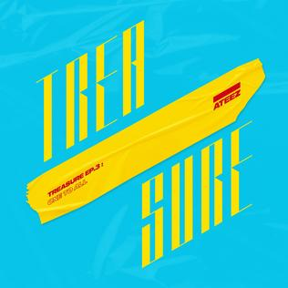 | TREASURE EP.3: ONE TO ALL | Treasure EP.3: One to All adalah album mini ketiga dari Ateez. Album ini memulai debutnya pada peringkat kedua di Gaon Album Chart, dan juga berada diperingkat sepuluh besar di tangga lagu Billboard World Albums dan Top Heatseekers. Pada tanggal 27 Mei, dua video penampilan dirilis untuk lagu "Illusion" adan "Wave". Pemungutan suara dari penggemar diadakan untuk memutuskan lagu mana yang dipilih sebagai singel utama dari album mini ini. Hal ini kemudia diungkapkan pada tanggal perilisan bahwa kedua lagu menjadi singel. | 10 Juni 2019 |
| 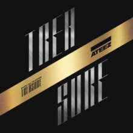 | TREASURE EP.FIN: ALL TO ACTION | Treasure EP.Fin: All to Action adalah album studio pertama dari Ateez. Album ini dirilis oleh KQ Entertainment bersama dengan singel "Wonderland" dan video musiknya. Album ini juga menjadi bagian terakhir dari seri Treasure. Album ini memulai debut di puncak Tangga Lagu Album Gaon. | 8 Oktober 2019 |
| 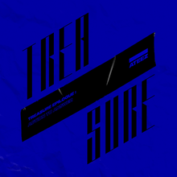 | TREASURE EPILOGUE: ACTION TO ANSWER | Treasure Epilogue: Action to Answer adalah album mini keempat dari Ateez. Album ini dirilis dengan "Answer" menjadi singel utama. Album fisik terdiri dari dari dua versi: A dan Z. Album ini memulai debut dipuncak Tangga Lagu Album Gaon, menjadi album kedua Ateez yang menjadi peringkat pertama di Korea Selatan. | 6 Januari 2020 |
| ZERO: FEVER PART.1 | Zero: Fever Part.1 adalah album mini kelima dari grup vokal pria asal Korea Selatan Ateez. Album ini dirilis dengan "Inception" dan "Thanxx" menjadi singel utama. Album fisik terdiri dalam tiga versi: Thanxx, Inception, dan Diary. Album ini terdiri dari tujuh lagu, dan menggabungkan genre yang berbeda seperti hip hop, EDM, reggae, dan synth-pop. | 29 Juli 2020 | |
| 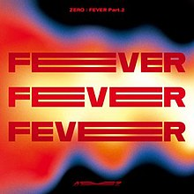 | ZERO: FEVER PART.2 | Zero: Fever Part.2 adalah album mini keenam dari Ateez. Album ini dirilis dengan lagu "Fireworks (I'm the One)" menjadi singel utama. Album fisik terdiri dari tiga versi: A, Diary, dan Z, dan menerima lebih dari 350,000 pra-pemesanan, melebihi rilisan mereka sebelumnya, Zero: Fever Part.1, yang menerima lebih dari 100,000 pemesanan. Album ini terdiri dari tujuh lagu, dan menggabungkan genre yang berbeda seperti hip hop, EDM, dan synth-pop. | 1 Maret 2021 |
| 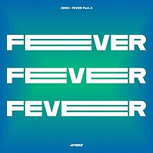 | ZERO: FEVER PART.3 |
Zero: Fever Part.3 adalah album mini ketujuh dari boy grup Korea Selatan Ateez. Ini dirilis dengan "Deja Vu" dan "Eternal Sunshine" sebagai singel utama. Album fisik hadir dalam tiga versi: A, Diary, dan Z. EP terdiri dari enam lagu.
Secara komersial, Zero: Fever Part.3 menerima lebih dari 810.000 pre-order, lebih dari dua kali lipat dari rilis mereka sebelumnya, Zero: Fever Part.2. album mini debut di nomor satu di Billboard World Albums Chart dan grup mencapai puncak baru di Billboard World Digital Songs Chart dengan "Deja Vu" di nomor empat. Itu juga menandai penampilan pertama Ateez di Billboard 200, dengan album mini memulai debutnya di nomor 42. Ateez juga memuncaki Billboard Emerging Artists Chart setelah rilis album. Album ini mendapatkan sertifikasi double platinum dengan lebih dari 737.000 penjualan fisik di Korea Selatan pada tahun 2021. |
13 September 2021 |
| 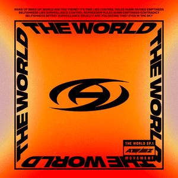 | THE WORLD EP.1: MOVEMENT | The World EP.1: Movement adalah album mini kesembilan dari Ateez. Ini dirilis melalui KQ Entertainment, RCA Records, dan Legacy Recordings. Ini terdiri dari tujuh lagu, termasuk single "Guerrilla". | 29 Juli 2022 |
| THE WORLD EP.2 : OUTLAW | The World EP.2: Outlaw adalah album mini kesebelas dari grup vokal pria Korea Selatan Ateez. Album ini dirilis melalui KQ Entertainment, RCA Records, dan Legacy Recordings. Album ini terdiri dari tujuh lagu, termasuk singel "Bouncy (K-Hot Chilli Peppers)". Band ini akan memulai tur dunia untuk mendukung album mini ini, berjudul The Fellowship: Break the World. | 16 Juni 2023 | |

|
TREASURE EP.EXTRA: SHIFT THE MAP | Treasure EP.Extra: Shift The Map adalah album studio debut Jepang oleh ATEEZ. Ini dirilis pada dengan Utopia (Japanese Ver.) sebagai judul lagu. | 4 Desember 2019 |
| 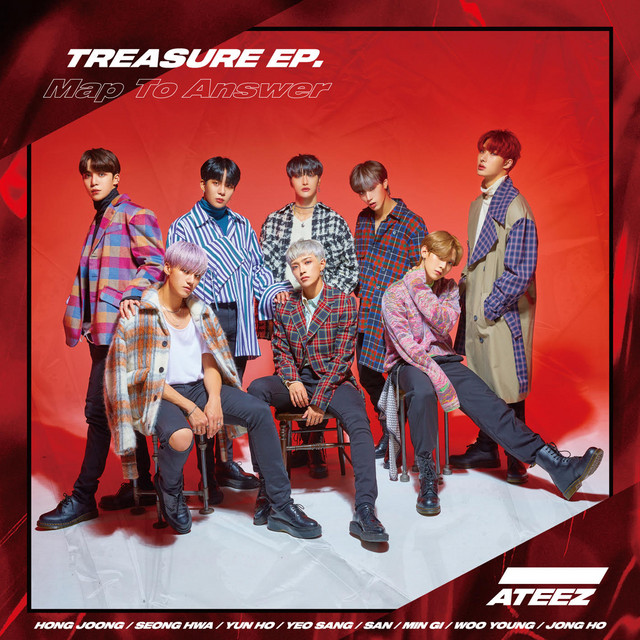 | TREASURE EP. MAP TO ANSWER | TREASURE EP. MAP TO ANSWER adalah mini album Jepang pertama dan rilis Jepang kedua oleh ATEEZ. | 12 Februari 2020 |
| 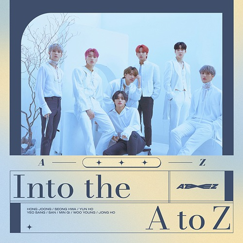 | INTO THE A to Z | Into the A to Z adalah album studio Jepang kedua dan rilis Jepang ketiga oleh ATEEZ. Album ini mengkompilasi lagu asli Jepang dan versi Jepang yang dirilis di Korea (total sepuluh lagu). | 24 Maret 2021 |
| 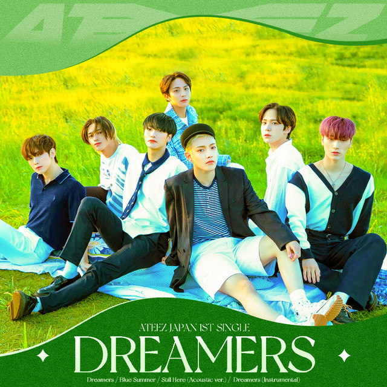 | DREAMERS | DREAMERS merupakan single Jepan pertama milik Ateez. | 28 Juli 2021 |
| 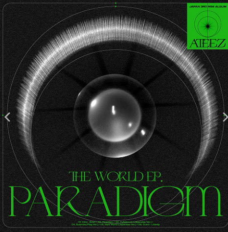 | THE WORLD EP.PARADIGM | THE WORLD EP.PARADIGM adalah mini album Jepang ketiga oleh ATEEZ. Album ini dirilis dengan "Paradigm" sebagai judul lagu album. Album fisik hadir dalam dua versi: Reguler dan Terbatas. | 30 November 2022 |
| ~ ~ ~ | OST, Feat_ATEEZ, dan lainnya. | ~ ~ ~ |